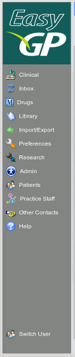

|  |
- Accessing Sections of the Program
- The side bar is similar to the 'Outlook' style panel that everyone has become very familiar with
and each of the buttons on the side bar will open a section of the program.
- Clinical- All patient specific clinical information will be entered or viewed in this section.
It will allow you to enter family history, past history, occupational history,
mental health issues, skin proceedures, workers compensation, full progress notes, forms for every
conceivable thing you could order, travel medicine, care planning, just to mention a few.
- Inbox- This section contains all incoming information for patients (plural), be it electronic pathology results,
radiology reports, letters from specialists, emails, scanned documents or hospital discharge summaries. From here
you may file and action any document, including insert progress notes or recalls into the patients notes.
- Drugs- Look up full drug product information.
- Library- keep all your favourite references and handouts.
- Research- A tool to explore your clinical data.
- Import/Export- Import data in and out of EasyGP.
- Admin- Manage administrative tasks such as the recall system.
- Patients- manage your patients database
- Practice Staff- manager the staff in your practice, their names, addresses, preferences and logon information and passwords.
- Other Contacts- all organisations, their branches and employees are entered here.
|